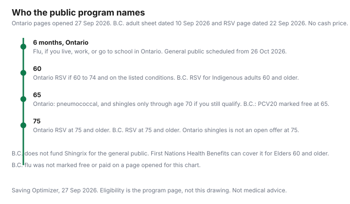

Healthcare · Canada
Free Adult Vaccines in Canada: Shingles, Pneumococcal, RSV and Flu, and Who Pays Out of Pocket

An adult can pay for a vaccine the province would have supplied, or can assume a vaccine is free when the age window has already closed. This page is an eligibility map for shingles, pneumococcal, RSV, and influenza, using Ontario and British Columbia pages as of 27 Sep 2026. Other provinces are blank where they are not covered. No pharmacy cash price is listed here, so the “otherwise you pay” column does not invent a dollar. Whether a vaccine is appropriate for you is a question for your clinician or pharmacist. This is not medical advice.
Key takeaways
- Ontario’s shingles page, updated 2 Jul 2026, funds a two-dose Shingrix series for seniors aged 65 to 70 who have not had a publicly funded shingles vaccine. The catch-up it still prints, for people born 1949 to 1953, ended 31 Dec 2024.
- Ontario funds Pneu-C-21 as one dose at age 65, with a different product and schedule for some higher-risk adults under 65. B.C. recommends PCV20 for adults 65 and older and for people at increased risk.
- Ontario funds RSV at 75 and older, and at 60 to 74 only with listed higher-risk criteria. B.C.’s page dated 22 Sep 2026 funds one dose at 75 and older, and for First Nations, Inuit, and Métis people at 60 and older.
- Ontario’s flu program is free for people six months and older who live, work, or study in the province. High-risk supply, including age 65 and older, is scheduled from the week of 28 Sep 2026. The general public is scheduled from 26 Oct 2026.
- A workplace plan may reimburse a vaccine you buy. No plan’s vaccine maximum is listed here. The province’s own drug plan is not this vaccine schedule.
How publicly funded adult vaccines work: provincial schedules and eligibility
Public funding is a provincial list, not a Canadian age. Ontario’s routine immunization schedule, updated 4 Aug 2026, says vaccines on that schedule are free if you meet the eligibility criteria.
The adult lines on that page are a tetanus-diphtheria-pertussis vaccine once in adulthood and in each pregnancy, tetanus-diphtheria every 10 years, flu every fall, COVID-19 every fall, pneumococcal at age 65, a two-dose shingles series between 65 and 70, and RSV at 75 or older. A later block on the same page says RSV is for eligible adults aged 60 to 74 and those 75 and older. The short line and the detailed RSV page have to be read together. The detailed page is the one with the 60-to-74 criteria.
British Columbia publishes its own lists. A vaccine the National Advisory Committee on Immunization recommends can still be a purchase in B.C. if the province has not funded it. The shingles section of the BCCDC “Vaccines in BC” page says that plainly: Shingrix is not part of B.C.’s publicly funded immunization program, even though NACI recommends it for adults 50 and older and for some immunocompromised adults 18 and older. Eligibility also changes by season. Every row below carries the date of the page it came from. The turning-65 guide is the wider birthday calendar. Drug plans are a different list. The provincial drug-plan guide does not decide a vaccine appointment.
Shingles, pneumococcal, RSV and flu: who qualifies for free doses (sourced provinces)
Ontario shingles, page updated 2 Jul 2026: the free series is Shingrix, two doses, if you are 65 to 70 and you have not received any publicly funded shingles vaccine, or you previously paid yourself for a dose of Zostavax II. You do not qualify if you are outside 65 to 70, or if you are 65 to 70 and already received publicly funded Zostavax II.
The page still describes a COVID-era catch-up for people born 1949 to 1953, to finish the series by 31 Dec 2024. That date is before this article. Do not treat it as an open window. Eligible seniors, on that page, can get the vaccine from a doctor, a nurse practitioner, or a participating pharmacy. If you do not qualify, the page says you can still be vaccinated by those clinicians, which means you are buying it.
Ontario pneumococcal, Ministry fact sheet for people six weeks and older, file dated 31 Jul 2026: one dose of Pneu-C-21 at 65 and older, except hematopoietic stem-cell transplant recipients, who may be offered up to four doses. People six weeks to 64 years with listed medical and non-medical risks may be offered Pneu-C-20, up to four doses. Someone who already received the publicly funded pneumococcal vaccines they were eligible for may not be eligible for another public dose. People who are not eligible can buy a vaccine, and the fact sheet says private insurance may cover it. B.C.’s clinical page says PCV20, introduced in July 2025, is recommended for adults 65 and older and for older children and adults at increased risk. The BCCDC sheet “Vaccines Recommended for BC Adults,” dated 10 Sep 2026, marks PCV20 free for healthy adults 65 and older and for listed higher-risk adults.
Ontario RSV, program page updated 19 Dec 2025: one publicly funded dose for residents who have not already received a publicly funded RSV vaccine and who are 75 or older, or who are 60 to 74 and meet one listed criterion. The criteria include living in a long-term care home, Elder Care Lodge, or retirement home; being in hospital at an alternate level of care; certain immunocompromising kidney conditions; hemodialysis or peritoneal dialysis; a solid-organ or stem-cell transplant; being homeless; or identifying as First Nations, Inuit, or Métis. An Ontario news release dated 25 Sep 2026 says those 60-to-74 and 75-and-older groups are eligible at any time during the year. B.C.’s RSV page, publication date 22 Sep 2026, offers one no-cost dose starting in fall 2026 for adults 75 and older, for long-term care and seniors’ assisted-living residents 75 and older, and for First Nations, Inuit, and Métis people 60 and older. You do not need another dose if you have already had an RSV vaccine. B.C. names the product in that program as mRESVIA. Ontario’s page names Abrysvo and Arexvy for older adults. This page does not tell you which product to ask for.
Influenza in Ontario is the broad one. The Universal Influenza Immunization Program fact sheet, file dated 18 Sep 2026, says the vaccine is free each year for people six months and older who live, work, or go to school in Ontario. A health card is not required, though a provider may ask for one, and people without a card can use a community health centre, a participating pharmacy, a public health unit, or another community clinic. High-risk and priority groups, including people 65 and older, are eligible as soon as supply is available in the fall. The news release of 25 Sep 2026 schedules that initial supply for the week of 28 Sep 2026, and schedules the general public for 26 Oct 2026. B.C. flu is not marked free or paid on the table; check with your B.C. health authority.
If you pay out of pocket: pharmacy prices and whether benefits reimburse
No pharmacy price for Shingrix, a pneumococcal vaccine, or an RSV vaccine was published as of 27 Sep 2026. A dollar you remember from an ad is not entered here.
Ontario’s RSV page says people who do not qualify can buy the vaccine with a prescription, at a pharmacy, and that the ministry does not reimburse vaccines purchased on the private market. It also says some private insurers may cover all or part of the cost. The pneumococcal fact sheet says the same kind of thing: if you are not eligible, you buy it, and you ask your insurer. B.C.’s RSV page says a vaccine for someone outside the funded group may be available for purchase at select pharmacies and travel clinics, and that a private plan may cover it.
A workplace drug plan is not automatically a vaccine plan. The drug-coverage guide is how formularies and prior authorization work. Ask the insurer whether the vaccine’s DIN is on the plan, whether a health spending account is the right purse, and whether you need a prescription to be reimbursed. The minor-ailments guide is a funded pharmacist assessment for listed conditions. It is not a promise that the vaccine itself is free. Travel insurance does not replace a funded dose at home. The travel-medical guide is what provincial plans do not pay once you leave. Get the vaccine you are eligible for before you rely on a travel policy.
Where to get vaccinated: pharmacies, doctors, public health
Location depends on the vaccine, and two Ontario pages do not tell the same pharmacy story. The flu-facts page, updated 4 May 2026, says children from six months up to two years get the flu shot from a doctor, a nurse practitioner, or public health, not from a pharmacy.
From age two, a participating pharmacy can give it. People 65 and older can use a doctor, a nurse practitioner, public health, or a participating pharmacy. The 25 Sep 2026 news release schedules general-public flu and COVID-19 shots at participating pharmacies, public health units, and participating doctor and nurse practitioner offices from 26 Oct 2026. The shingles page, updated later than the adult-immunization overview, says eligible seniors can get free Shingrix from a doctor, a nurse practitioner, or a participating pharmacy.
RSV is the awkward row. The Ontario program page, updated 19 Dec 2025, says free RSV immunizations are not available through pharmacies for older adults, and that pharmacists do not have direct access to the publicly funded supply. Someone with a prescription who buys it at a pharmacy pays. The 25 Sep 2026 news release confirms who is eligible. It does not say the free adult dose moved into pharmacies. Confirm the counter with your public health unit before you assume the September eligibility note changed the December pharmacy rule. In B.C., the RSV page says to call 1-833-838-2323, or to check the health authority, for a funded dose. Call ahead. The news release says supply varies by provider.
Keeping your own record
Ontario’s vaccines page, updated 21 Sep 2026, still tells families to keep the yellow immunization card and to bring it to each appointment. It also describes Panorama, the electronic system public health uses, and a workflow that lets a provider see your immunization history.
You can ask your local public health unit to withdraw consent for that viewing. The page says withdrawing consent does not stop you receiving care or vaccines, and does not change school immunization rules. Withdrawing consent does mean you are the person holding the paper record. Keep the card anyway.
B.C.’s RSV page says you can see your immunization record in Health Gateway, and that you can add a missing RSV dose to the provincial registry. A record the pharmacy cannot see is a record you should be able to show. Write the date, the product name, and the lot if it is on the receipt. That note is also what you show the next clinician who asks whether you already had a publicly funded shingles vaccine or a previous RSV dose. Those history questions decide the free dose.
Checklist by age group
Use the row for your age, then the exception column. “Free” means the page says the province or the named program supplies it. It does not mean every clinician has stock this week.
| Vaccine | Free for, where a page said so | Otherwise | Source and date |
|---|---|---|---|
| Influenza | Ontario: people 6 months and older who live, work, or study in Ontario. High-risk groups, including age 65 and older, are scheduled from the week of 28 Sep 2026. General public scheduled 26 Oct 2026. | B.C. flu eligibility is not covered here. Ontario’s program is free for people who meet the residency test. A health card is not required. | UIIP fact sheet, file dated 18 Sep 2026. Ontario news release, 25 Sep 2026. Flu-facts page updated 4 May 2026. |
| Shingles (Shingrix) | Ontario: ages 65 to 70, two doses, if you have not had a publicly funded shingles vaccine. B.C. provincial program: not funded. First Nations Health Benefits: First Nations Elders 60 and older. | Outside those rules, you buy it. Ontario’s 1949-to-1953 catch-up date of 31 Dec 2024 has passed. | Ontario shingles page, updated 2 Jul 2026. BCCDC “Vaccines in BC,” as of 27 Sep 2026. |
| Pneumococcal | Ontario: Pneu-C-21, one dose, at 65 and older, with up to four doses for stem-cell transplant recipients. Pneu-C-20 for listed higher-risk people from 6 weeks to 64. B.C.: PCV20 recommended at 65 and older and for increased risk; the 10 Sep 2026 adult sheet marks those eligible rows free. | If you are not eligible, you buy it. A previous public pneumococcal series may mean no further public dose. Private insurance may pay. | Ontario fact sheet, file dated 31 Jul 2026. BCCDC clinical page and adult sheet dated 10 Sep 2026. |
| RSV | Ontario: 75 and older, or 60 to 74 with the listed higher-risk criteria, if you have not already had a publicly funded dose. B.C.: 75 and older, and First Nations, Inuit, and Métis people 60 and older. One dose. | Everyone else pays if they choose to buy it. Ontario’s program page says the ministry does not reimburse a private-market purchase. Some insurers may. | Ontario RSV page, updated 19 Dec 2025. Ontario news release, 25 Sep 2026. B.C. RSV page, 22 Sep 2026. |

Sources
- Ontario, “Ontario’s routine immunization schedule,” updated 4 Aug 2026. Adult lines for flu, pneumococcal, shingles, and RSV.
- Ontario, “Shingles vaccine,” updated 2 Jul 2026. Ages 65 to 70, Shingrix, two doses, and the closed 31 Dec 2024 catch-up.
- Ontario pneumococcal fact sheet, file dated 31 Jul 2026. Pneu-C-21 at 65 and Pneu-C-20 for listed higher-risk people under 65.
- Ontario, RSV prevention programs, updated 19 Dec 2025, and the Ministry news release of 25 Sep 2026. Eligibility, and the statement that free adult RSV is not supplied through pharmacies on the December page.
- Ontario UIIP fact sheet, file dated 18 Sep 2026, and “The flu,” updated 4 May 2026. Who gets a free flu shot, and which ages can use a pharmacy.
- B.C. RSV immunization program, publication date 22 Sep 2026. BCCDC “Vaccines in BC,” as of 27 Sep 2026, for shingles and PCV20. BCCDC adult sheet dated 10 Sep 2026.
- No cash price is listed here. A Canadian Immunization Guide chapter was not needed once the provincial pages stated the funded groups used above.
Frequently asked questions
Is the shingles vaccine free in Canada?
It is free only inside a provincial or named-program rule, not because you live in Canada. Ontario funds two doses of Shingrix at ages 65 to 70 if you have not had a publicly funded dose, on the page updated 2 Jul 2026, and B.C.’s provincial program does not fund Shingrix, though First Nations Health Benefits covers Elders 60 and older. The Ontario catch-up for births in 1949 to 1953 ended on 31 Dec 2024. Outside those rules you pay, unless another plan reimburses you.
Who gets a free RSV vaccine?
Ontario funds one dose at 75 and older, and at 60 to 74 only if you meet a listed higher-risk criterion, and only if you have not already had a publicly funded dose. B.C., on a page dated 22 Sep 2026, funds one dose at 75 and older and for First Nations, Inuit, and Métis people 60 and older. A previous RSV vaccine means you do not get another publicly funded dose on those pages. Everyone else who wants it is in the purchase column, and Ontario says the ministry does not repay a private-market vaccine.
Is the flu shot free?
In Ontario, yes, for people six months and older who live, work, or go to school in the province, and a health card is not required. High-risk groups, including people 65 and older, are scheduled from the week of 28 Sep 2026, and the general public from 26 Oct 2026. Children under two do not get it at a pharmacy. This answer does not speak for B.C.; check with your B.C. health authority.
Will my benefits reimburse a vaccine I pay for?
Sometimes. Ontario’s RSV and pneumococcal pages say a private insurer may cover a vaccine you buy when you are not eligible for the public dose, and that the ministry does not reimburse the private-market RSV purchase. No workplace maximum is listed here, so none is printed. Ask whether the DIN is on your plan or your spending account before you pay, and do not treat a provincial drug plan as this vaccine schedule.
Where can adults get vaccinated?
In Ontario, flu shots for people two and older are at participating pharmacies, and also with a doctor, a nurse practitioner, or public health. Eligible free shingles doses are at a doctor, a nurse practitioner, or a participating pharmacy. Free adult RSV, on the program page updated 19 Dec 2025, is not supplied through pharmacies. In B.C., call 1-833-838-2323 or your health authority for a funded RSV dose, and call ahead because supply is not the same at every counter.
Researched and drafted with AI assistance and fact-checked against official Canadian sources. How we create content.